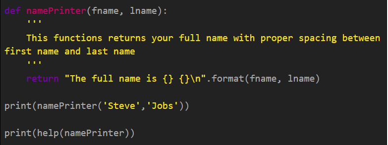
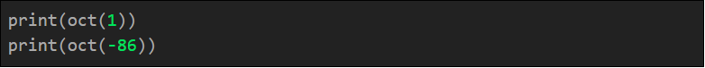
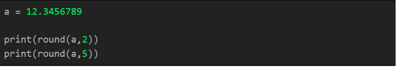

There are lots of functions which python provides to operate on without importing any module. Many are common which python developers use, here are some of the methods which you may know or not. I have provided as much as examples I can. All the below codes are tested and works fine for python version 3.5.0+ versions.
abs(x)
It returns a non negative value irrespective of int or double. In mathematics the absolute value is represented as ‘|x|’ . Whenever abs(x) is implemented then the compiler calls x.__abs__()
all(iterable)
Returns a boolean True if all the elements in the iterable is true or empty iterable.
any(iterable)
Similar to above but returns True even if one element is true inside the iterable.
bin(x)
Returns the binary equivalent of the integer. ‘0b’ will be prefixed.
ord(x) & chr(x)
Both are opposite to each other. ord(x) returns the ASCII unicode equivalent of ‘x’ and chr(x) returns the string or number equivalent.
dir([object])
Returns a list of available valid attributes related to that object.
divmod(x,y)
Expanded as (DivideMod). Returns an list in the format of [x//y, x%y]
help([object/function])
Returns the details about the class object or module or function. The respective class object or module or function should contain commented documentation.

hex(x)
Converts an integer to lowercase hexadecimal String.
issubclass(subclass, class)
You might have heard of isinstanceof() which returns whether the object is of the given class but have you heard about issubclass(). It checks whether the given subclass is the subclass of the class provided.
oct(x)
Converts an integer number to an octal string. It is prefixed with “0o”.

reversed(list/sequence)
Python has an inbuilt function that reverses the list or String sequence.
round(x, n)
Rounds the number to ‘n’ places.

sorted(list/sequence)
Well python provides a function to sort the given list or string sequence.
sum(list)
You have heard the basically sum() would return a+b kind of operation but in python sum() can take a list of integers as parameters and returns the cumulative sum.